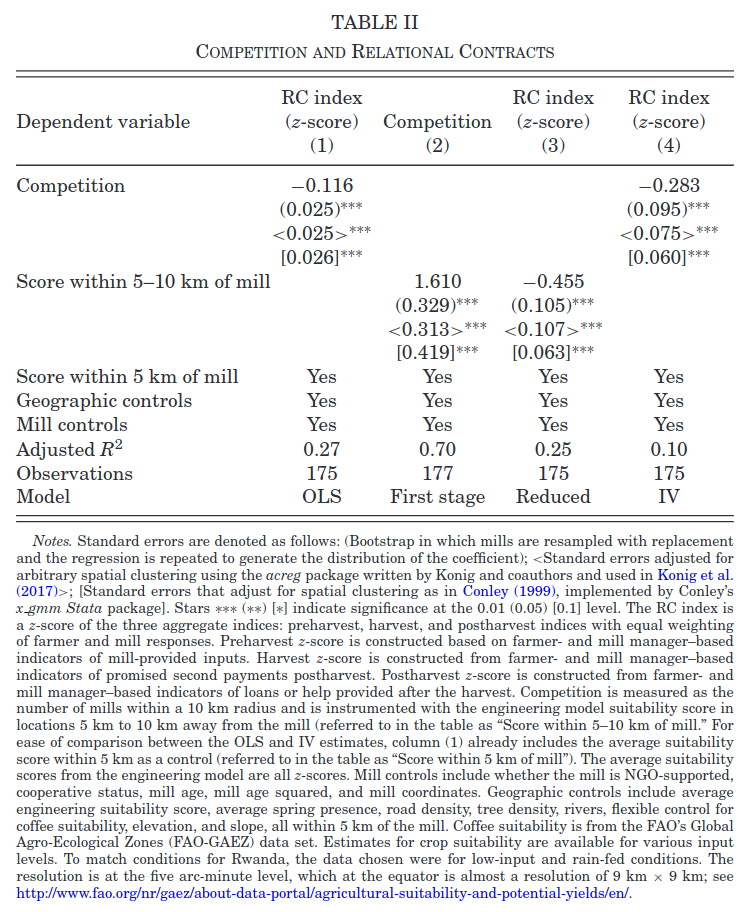
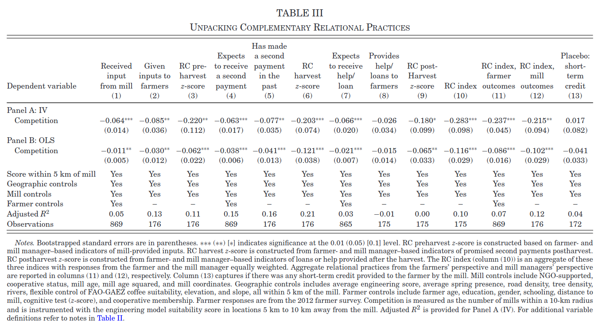

ECON 626: Problem Set 7
\[ \def\Er{{\mathrm{E}}} \def\En{{\mathbb{En}}} \def\cov{{\mathrm{Cov}}} \def\var{{\mathrm{Var}}} \def\R{{\mathbb{R}}} \newcommand\norm[1]{\left\lVert#1\right\rVert} \def\rank{{\mathrm{rank}}} \newcommand{\inpr}{ \overset{p^*_{\scriptscriptstyle n}}{\longrightarrow}} \def\inprob{{\,{\buildrel p \over \rightarrow}\,}} \def\indist{\,{\buildrel d \over \rightarrow}\,} \DeclareMathOperator*{\plim}{plim} \]
1 Series Regression with Endogeneity
Suppose \[ y_i = \beta_0 + \beta_1 \cos(x_i) + \beta_2 \cos(2 x_i) + \cdots + \beta_k \cos(k x_i) + u_i \] where \(x_i \in \R\)
1.1 Instrument
You suspect \(x_i\) is related to \(u_i\), but you have another variable, \(z_i \in \R\), such that \(\Er[u_i | z_i] = 0\). Let \(h(z_i) = (h_0(z_i),\ldots,h_k(z_i))'\) be a vector of functions of \(z_i\). Use moment conditions of the form \(\Er[h(z_i) u_i]=0\) to construct an estimator for \(\beta = (\beta_0, \ldots, \beta_k)'\). State a relevance or rank condition needed for identification.
1.2 Consistency
Show that the estimator from Section 1.1 is consistent. State any additional assumptions needed.
1.3 Asymptotic Distribution
Find the asymptotic distribution of the estimator from Section 1.1. State any additional assumptions needed.
2 Informal Contracting in Coffee Production
In “Competition and Relational Contracts in the Rwanda Coffee Chain,” Macchiavello and Morjaria (2020) examine how more competition can lead to worse outcomes in an environment without formal contracts. The authors create an index of “relational contracting” between farmers and mills. Relational contracting consists of loans, delayed payments, and so on that are sustained by repeated interaction instead of any formal contract enforcement. The authors then want to estimate how competition (the number of mills) affects relational contracting.
2.1 OLS
The authors estimate \[ RC_m = \alpha + \beta C_m + \eta X_m + \gamma Z_m + \epsilon_m \] where \(RC_m\) is a relational contracting index for mill \(m\), \(C_m\) is the number of competing mills within 10 km of mill \(m\), \(X_m\) are mill characteristics, and \(Z_m\) are geographic characteristics of the land around the mill.
Give one reason why \(\Er[C_m \epsilon_m]\) might not be zero, speculate on the sign of \(\Er[C_m \epsilon_m]\), and say whether you expect \(\hat{\beta}^{OLS}\) to be greater or less than \(\beta\).

2.2 Instrument
As an instrument for \(C_m\), the authors use the predicted number of mills 5–10 km away from an engineering model of coffee production. It predicts mill locations based on geography and local climate. Column (2) of Figure 1 shows estimates of the first stage regression of \(C_m\) on this instrument. Which instrument assumption can we check by looking at this regression? Are you confident that this assumption is met? If not, what should be done about it? Can this first-stage regression check the instrument’s exclusion restriction? Hint: \(F=t^2 \approx \left(\frac{1.6}{0.4}\right)^2 \approx 16\).
2.3 Dependence
The sample consists of mills in Rwanda, some of which might be near one another. Briefly, how does this affect the consistency and asymptotic distribution of the estimates of \(\beta\) in Figure 1? If the observations exhibit spatial dependence, what in the table, if anything, needs to be calculated differently than if observations were independent? Explain how a spatially robust standard-error calculation would depend on an assumption about the geographic range of dependence.

2.4 More Outcomes
Figure 2 shows estimates of the same model as Figure 1, except that, instead of the relational contracting index, the outcome is one of the components of the index. Different columns show different components. As shown, the coefficients are all negative and most are statistically significant. Should this make us less concerned about the potential weak-instrument problem? Why or why not? Hint: these regressions all have the same first stage. A really good answer to this question would be fairly precise and perhaps derive the joint distribution of these estimates under weak-instrument asymptotics.
3 Dynamic Panel Model
Consider the model: \[ y_{it} = \rho y_{it-1} + x_{it}'\beta + \alpha_i + u_{it} \] for \(i=1,\ldots,N\) and \(t=1,\ldots,T\). Assume observations are independent across \(i\), \(x\) is strictly exogenous, \(\Er[x_{it} u_{is}] = 0 \forall s,t\), and \(y_{it-1}\) is weakly exogenous, \(\Er[y_{it-1} u_{it+s}] = 0\) for \(s \geq 0\). Also assume the \(u_{it}\) errors are serially uncorrelated.
3.1 First Differences
Let \(\Delta y_{it} = y_{it} - y_{it-1}\). Take differences of the model to eliminate \(\alpha_i\), leaving \[ \Delta y_{it} = \rho \Delta y_{it-1} + \Delta x_{it}'\beta + \Delta u_{it}. \] Will OLS on this equation be consistent?
3.2 Fixed Effects Inconsistent
Show that for \(T\) fixed and \(N \to \infty\), the fixed effects estimator, i.e. demeaning \(y_{it}\), \(y_{it-1}\), and \(x_{it}\) over the estimation periods and running the resulting regression, is not consistent. Carefully state which observations are used to compute each average. Hint: what is \(\Er[\bar{y}_i u_{it}]\)?
3.3 GMM
Assume \(T \geq 3\). Argue that \(\Er[\Delta u_{it} y_{it-\ell}]=0\) for \(\ell \geq 2\), and that \(\Er[\Delta y_{it-1} y_{it-\ell}] \neq 0\). Use this fact, along with the assumptions above to derive a GMM estimator for \(\rho\) and \(\beta\). State the periods for which each moment condition is available.